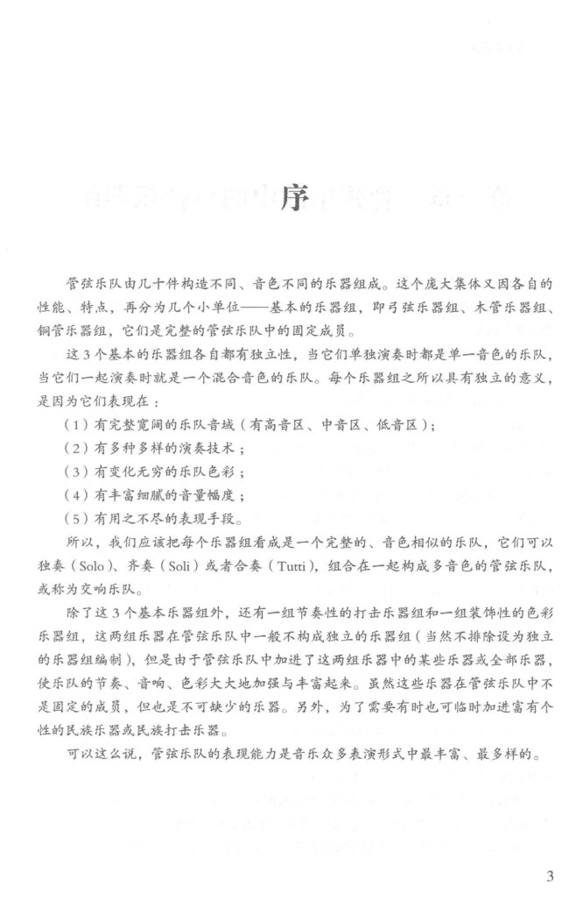
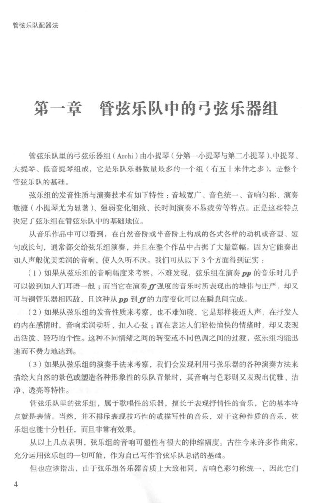
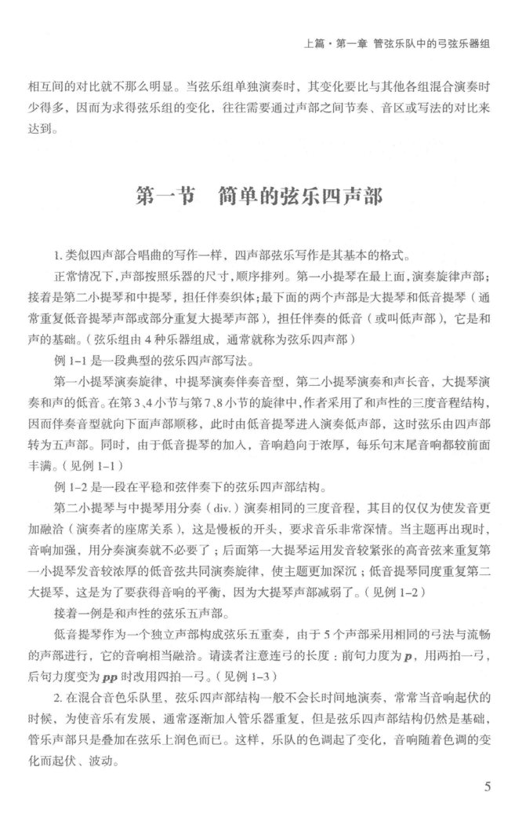
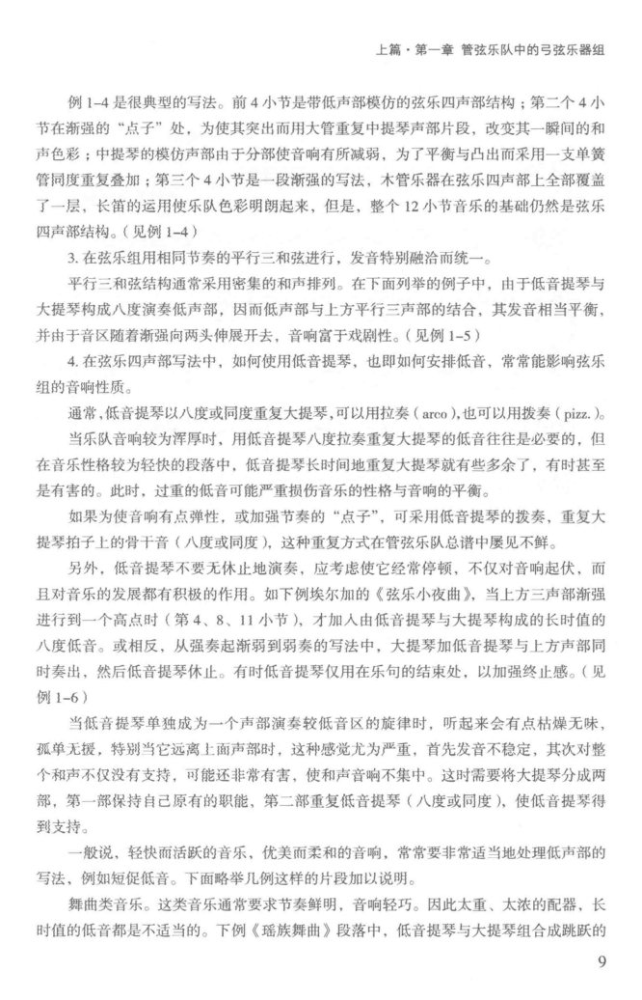
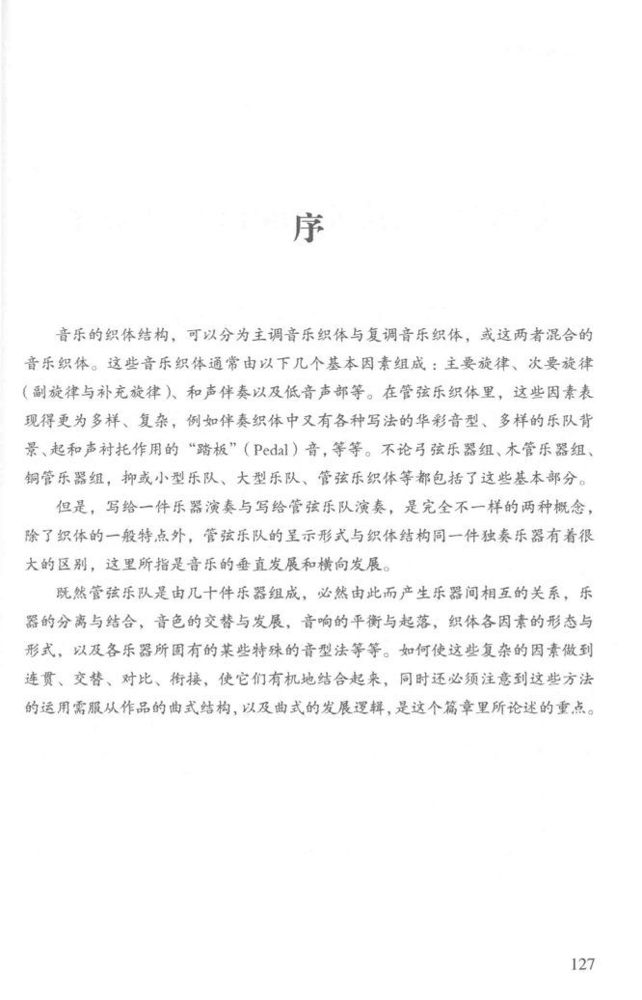
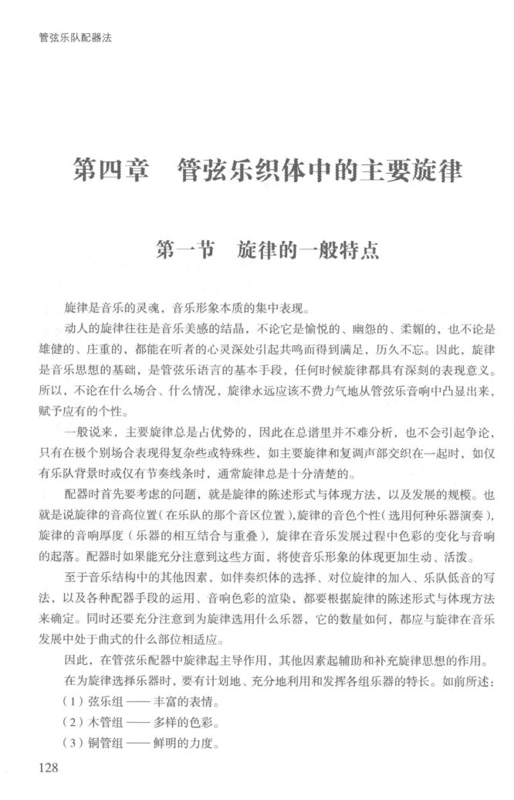
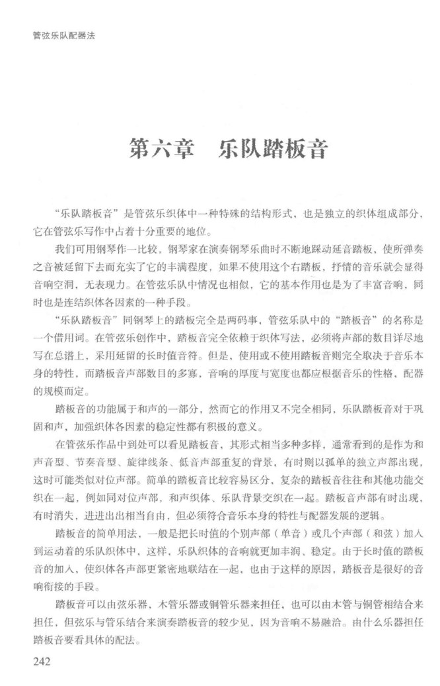
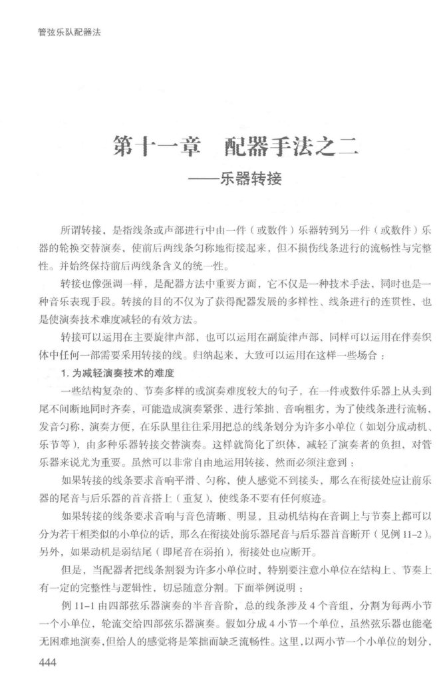
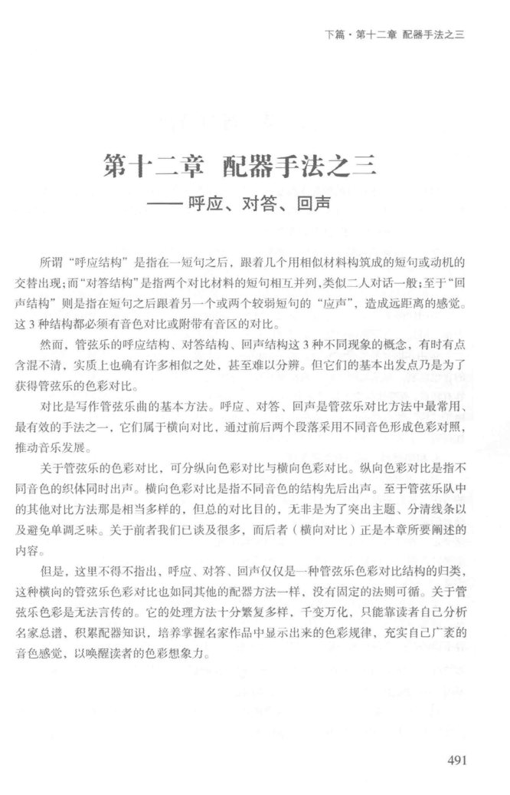
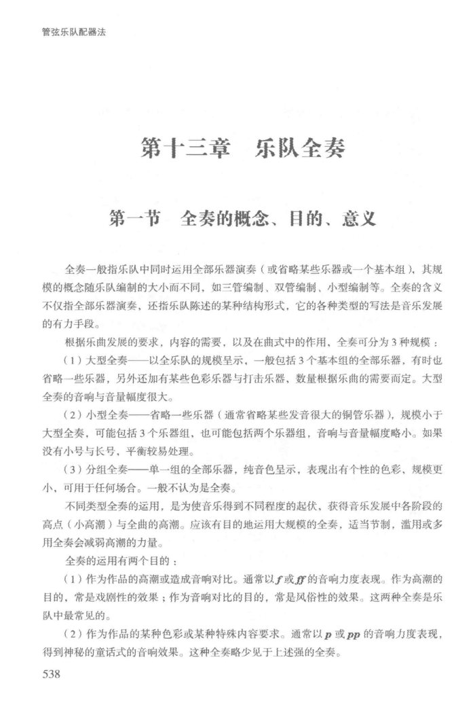

PDF 第 7 页
施咏康 · 印刷 p.3 · 序 · 管弦乐队的乐器组
序
管弦乐队由几十件构造不同、音色不同的乐器组成。这个庞大集体又因各自的
性能、特点，再分为几个小单位一基本的乐器组，即弓弦乐器组、木管乐器组、
铜管乐器组，它们是完整的管弦乐队中的固定成员。
这3个基本的乐器组各自都有独立性，当它们单独演奏时都是单一音色的乐队，
当它们一起演奏时就是一个混合音色的乐队。每个乐器组之所以具有独立的意义，
是因为它们表现在：
（1）有完整宽阔的乐队音域（有高音区、中音区、低音区）；
（2）有多种多样的演奏技术；
（3）有变化无穷的乐队色彩；
（4）有丰富细腻的音量幅度；
（5）有用之不尽的表现手段。
所以，我们应该把每个乐器组看成是一个完整的、音色相似的乐队，它们可以
独奏（Solo）齐奏（Soli）或者合奏（Tutti），组合在一起构成多音色的管弦乐队，
或称为交响乐队。
除了这3个基本乐器组外，还有一组节奏性的打击乐器组和一组装饰性的色彩
乐器组，这两组乐器在管弦乐队中一般不构成独立的乐器组（当然不排除设为独立
的乐器组编制），但是由于管弦乐队中加进了这两组乐器中的某些乐器或全部乐器，
使乐队的节奏、音响、色彩大大地加强与丰富起来。虽然这些乐器在管弦乐队中不
是固定的成员，但也是不可缺少的乐器。另外，为了需要有时也可临时加进富有个
性的民族乐器或民族打击乐器。
可以这么说，管弦乐队的表现能力是音乐众多表演形式中最丰富、最多样的。
3
PDF 第 8 页
施咏康 · 印刷 p.4 · 第一章 管弦乐队中的弓弦乐器组
管弦乐队配器法
第一章 管弦乐队中的弓弦乐器组
管弦乐队里的弓弦乐器组（Archi）由小提琴（分第一小提琴与第二小提琴）中提琴、
大提琴、低音提琴组成，它是乐队乐器数量最多的一个组（有五十来件之多），是整个
管弦乐队的基础。
弦乐组的发音性质与演奏技术有如下特性：音域宽广、音色统一、音响匀称、演奏
敏捷（小提琴尤为显著）、强弱变化细致、长时间演奏不易疲劳等特点。正是这些特点
决定了弦乐组在管弦乐队中的基础地位。
从音乐作品中可以看到，在自然音阶或半音阶上构成的各式各样的动机或音型、短
句或长句，通常都交给弦乐组演奏，并且在整个作品中占据了大量篇幅。因为它能奏出
如人声般优美柔润的音响，使人久听不厌。我们可从以下3个方面得到证实：
（1）如果从弦乐组的音响幅度来考察，不难发现，弦乐组在演奏pp的音乐时几乎
可以做到如人们耳语一般；而当它在演奏f强度的音乐时所表现出的雄伟与庄严，却又
可与铜管乐器相匹敌，且这种从pp到f的力度变化可以在瞬息间完成。
（2）如果从弦乐组的发音性质来考察，也不难知晓，它是那样接近人声，在抒发人
的内在感情时，音响柔润动听、扣人心弦；而在表达人们轻松愉快的情绪时，却又表现
出活泼、轻巧的个性。这种不同情绪之间的转变或不同色调之间的过渡，弦乐组均能迅
速而不费力地达到。
（3）如果从弦乐组的演奏手法来考察，我们会发现利用弓弦乐器的各种演奏方法来
描绘大自然的景色或塑造各种形象性的乐队背景时，其音响与色彩则又表现出优雅、洁
净、透亮等特性。
管弦乐队里的弦乐组，属于歌唱性的乐器，擅长于表现抒情性的音乐，它的基本特
点就是表情。当然，并不排斥表现技巧性的或描写性的音乐，对于这种性质的音乐，弦
乐组也能十分胜任，而且非常有效果。
从以上几点表明，弦乐组的音响可塑性有很大的伸缩幅度。古往今来许多作曲家，
充分运用弦乐组的一切可能，作为自已写作管弦乐队总谱的基础。
但也应该指出，由于弦乐组各乐器音质上大致相同，音响色彩匀称统一，因此它们
4
PDF 第 9 页
施咏康 · 印刷 p.5 · 第一章 管弦乐队中的弓弦乐器组 · 简单的弦乐四声部
上篇·第一章管弦乐队中的弓弦乐器组
相互间的对比就不那么明显。当弦乐组单独演奏时，其变化要比与其他各组混合演奏时
少得多，因而为求得弦乐组的变化，往往需要通过声部之间节奏、音区或写法的对比来
达到。
第一节简单的弦乐四声部
1.类似四声部合唱曲的写作一样，四声部弦乐写作是其基本的格式。
正常情况下，声部按照乐器的尺寸，顺序排列。第一小提琴在最上面，演奏旋律声部；
接着是第二小提琴和中提琴，担任伴奏织体；最下面的两个声部是大提琴和低音提琴（通
常重复低音提琴声部或部分重复大提琴声部），担任伴奏的低音（或叫低声部），它是和
声的基础。（弦乐组由4种乐器组成，通常就称为弦乐四声部）
例1-1是一段典型的弦乐四声部写法。
第一小提琴演奏旋律，中提琴演奏伴奏音型，第二小提琴演奏和声长音，大提琴演
奏和声的低音。在第3、4小节与第7、8小节的旋律中，作者采用了和声性的三度音程结构，
因而伴奏音型就向下面声部顺移，此时由低音提琴进人演奏低声部，这时弦乐由四声部
转为五声部。同时，由于低音提琴的加人，音响趋向于浓厚，每乐句末尾音响都较前面
丰满。（见例1-1）
例1-2是一段在平稳和弦伴奏下的弦乐四声部结构。
第二小提琴与中提琴用分奏（div.）演奏相同的三度音程，其目的仅仅为使发音更
加融洽（演奏者的座席关系），这是慢板的开头，要求音乐非常深情。当主题再出现时，
音响加强，用分奏演奏就不必要了；后面第一大提琴运用发音较紧张的高音弦来重复第
一小提琴发音较浓厚的低音弦共同演奏旋律，使主题更加深沉；低音提琴同度重复第二
大提琴，这是为了要获得音响的平衡，因为大提琴声部减弱了。（见例1-2）
接着一例是和声性的弦乐五声部。
低音提琴作为一个独立声部构成弦乐五重奏，由于5个声部采用相同的弓法与流畅
的声部进行，它的音响相当融洽。请读者注意连弓的长度：前句力度为p，用两拍一弓，
后句力度变为P时改用四拍一弓。（见例1-3）
2.在混合音色乐队里，弦乐四声部结构一般不会长时间地演奏，常常当音响起伏的
时候，为使音乐有发展，通常逐渐加人管乐器重复，但是弦乐四声部结构仍然是基础，
管乐声部只是叠加在弦乐上润色而已。这样，乐队的色调起了变化，音响随着色调的变
化而起伏、波动。
5
PDF 第 13 页
施咏康 · 印刷 p.9 · 第一章 · 简单的弦乐四声部
上篇·第一章管弦乐队中的弓弦乐器组
例1-4是很典型的写法。前4小节是带低声部模仿的弦乐四声部结构；第二个4小
节在渐强的“点子”处，为使其突出而用大管重复中提琴声部片段，改变其一瞬间的和
声色彩；中提琴的模仿声部由于分部使音响有所减弱，为了平衡与凸出而采用一支单簧
管同度重复叠加；第三个4小节是一段渐强的写法，木管乐器在弦乐四声部上全部覆盖
了一层，长笛的运用使乐队色彩明朗起来，但是，整个12小节音乐的基础仍然是弦乐
四声部结构。（见例1-4）
3.在弦乐组用相同节奏的平行三和弦进行，发音特别融洽而统一。
平行三和弦结构通常采用密集的和声排列。在下面列举的例子中，由于低音提琴与
大提琴构成八度演奏低声部，因而低声部与上方平行三声部的结合，其发音相当平衡，
并由于音区随着渐强向两头伸展开去，音响富于戏剧性。（见例1-5）
4.在弦乐四声部写法中，如何使用低音提琴，也即如何安排低音，常常能影响弦乐
组的音响性质。
通常，低音提琴以八度或同度重复大提琴，可以用拉奏（arco），也可以用拨奏（pizz.）。
当乐队音响较为浑厚时，用低音提琴八度拉奏重复大提琴的低音往往是必要的，但
在音乐性格较为轻快的段落中，低音提琴长时间地重复大提琴就有些多余了，有时甚至
是有害的。此时，过重的低音可能严重损伤音乐的性格与音响的平衡。
如果为使音响有点弹性，或加强节奏的“点子”，可采用低音提琴的拨奏，重复大
提琴拍子上的骨干音（八度或同度），这种重复方式在管弦乐队总谱中屡见不鲜。
另外，低音提琴不要无休止地演奏，应考虑使它经常停顿，不仅对音响起伏，而
进行到一个高点时（第4、8、11小节），才加人由低音提琴与大提琴构成的长时值的
八度低音。或相反，从强奏起渐弱到弱奏的写法中，大提琴加低音提琴与上方声部同
时奏出，然后低音提琴休止。有时低音提琴仅用在乐句的结束处，以加强终止感。（见
例1-6)
当低音提琴单独成为一个声部演奏较低音区的旋律时，听起来会有点枯燥无味，
孤单无援，特别当它远离上面声部时，这种感觉尤为严重，首先发音不稳定，其次对整
个和声不仅没有支持，可能还非常有害，使和声音响不集中。这时需要将大提琴分成两
部，第一部保持自已原有的职能，第二部重复低音提琴（八度或同度），使低音提琴得
到支持。
一般说，轻快面活跃的音乐，优美而柔和的音响，常常要非常适当地处理低声部的
写法，例如短促低音。下面略举几例这样的片段加以说明。
舞曲类音乐。这类音乐通常要求节奏鲜明，音响轻巧。因此太重、太浓的配器，长
时值的低音都是不适当的。下例《瑶族舞曲》段落中，低音提琴与大提琴组合成跳跃的
9
PDF 第 131 页
施咏康 · 印刷 p.127 · 序 · 管弦乐织体各因素
序
音乐的织体结构，可以分为主调音乐织体与复调音乐织体，或这两者混合的
音乐织体。这些音乐织体通常由以下几个基本因素组成：主要旋律、次要旋律
（副旋律与补充旋律）和声伴奏以及低音声部等。在管弦乐织体里，这些因素表
现得更为多样、复杂，例如伴奏织体中又有各种写法的华彩音型、多样的乐队背
景、起和声衬托作用的“踏板”（Pedal）音，等等。不论弓弦乐器组、木管乐器组、
铜管乐器组，抑或小型乐队、大型乐队、管弦乐织体等都包括了这些基本部分。
但是，写给一件乐器演奏与写给管弦乐队演奏，是完全不一样的两种概念，
除了织体的一般特点外，管弦乐队的呈示形式与织体结构同一件独奏乐器有着很
大的区别，这里所指是音乐的垂直发展和横向发展。
既然管弦乐队是由几十件乐器组成，必然由此而产生乐器间相互的关系，乐
器的分离与结合，音色的交替与发展，音响的平衡与起落，织体各因素的形态与
形式，以及各乐器所固有的某些特殊的音型法等等。如何使这些复杂的因素做到
连贯、交替、对比、街接，使它们有机地结合起来，同时还必须注意到这些方法
的运用需服从作品的曲式结构，以及曲式的发展逻辑，是这个篇章里所论述的重点。
127
本手册使用本页- adler.foreground-background
整体配器必须把全乐队划分为前景、中景和背景，并让各层承担不同的听觉权重。“这些音乐织体通常由以下几个基本因素组成：主要旋律、次要旋律（副旋律与补充旋律）和声伴奏以及低音声部等。在管弦乐织体里，这些因素表现得更为多样、复杂，例如伴奏织体中又有各种写法的华彩音型、多样的乐队背景、起和声衬托作用的“踏板”（Pedal）音，等等。”
- piston.analysis-protocol
配器分析先撤开配器研究结构，再考察乐器分配、平衡、对比与各因素的细节处理。“既然管弦乐队是由几十件乐器组成，必然由此而产生乐器间相互的关系，乐器的分离与结合，音色的交替与发展，音响的平衡与起落，织体各因素的形态与形式，以及各乐器所固有的某些特殊的音型法等等。”
PDF 第 132 页
施咏康 · 印刷 p.128 · 第四章 管弦乐织体中的主要旋律
管弦乐队配器法
第四章管弦乐织体中的主要旋律
第一节旋律的一般特点
旋律是音乐的灵魂，音乐形象本质的集中表现。
动人的旋律往往是音乐美感的结晶，不论它是愉悦的、幽怨的、柔媚的，也不论是
雄健的、庄重的，都能在听者的心灵深处引起共鸣而得到满足，历久不忘。因此，旋律
是音乐思想的基础，是管弦乐语言的基本手段，任何时候旋律都具有深刻的表现意义。
所以，不论在什么场合、什么情况，旋律永远应该不费力气地从管弦乐音响中凸显出来，
赋予应有的个性。
一般说来，主要旋律总是占优势的，因此在总谱里并不难分析，也不会引起争论，
只有在极个别场合表现得复杂些或特殊些，如主要旋律和复调声部交织在一起时，如仅
有乐队背景时或仅有节奏线条时，通常旋律总是十分清楚的。
配器时首先要考虑的问题，就是旋律的陈述形式与体现方法，以及发展的规模。也
就是说旋律的音高位置（在乐队的那个音区位置）旋律的音色个性（选用何种乐器演奏），
旋律的音响厚度（乐器的相互结合与重叠），旋律在音乐发展过程中色彩的变化与音响
的起落。配器时如果能充分注意到这些方面，将使音乐形象的体现更加生动、活泼。
至于音乐结构中的其他因素，如伴奏织体的选择、对位旋律的加人、乐队低音的写
法，以及各种配器手段的运用、音响色彩的渲染，都要根据旋律的陈述形式与体现方法
来确定。同时还要充分注意到为旋律选用什么乐器，它的数量如何，都应与旋律在音乐
发展中处于曲式的什么部位相适应。
因此，在管弦乐配器中旋律起主导作用，其他因素起辅助和补充旋律思想的作用。
在为旋律选择乐器时，要有计划地、充分地利用和发挥各组乐器的特长。如前所述：
（1）弦乐组一丰富的表情。
（2）木管组一多样的色彩。
（3）铜管组一鲜明的力度。
128
PDF 第 246 页
施咏康 · 印刷 p.242 · 第六章 乐队踏板音
管弦乐队配器法
第六章乐队踏板音
“乐队踏板音”是管弦乐织体中一种特殊的结构形式，也是独立的织体组成部分，
它在管弦乐写作中占着十分重要的地位。
我们可用钢琴作一比较，钢琴家在演奏钢琴乐曲时不断地踩动延音踏板，使所弹奏
之音被延留下去而充实了它的丰满程度，如果不使用这个右踏板，抒情的音乐就会显得
音响空洞，无表现力。在管弦乐队中情况也相似，它的基本作用也是为了丰富音响，同
时也是连结织体各因素的一种手段。
“乐队踏板音”同钢琴上的踏板完全是两码事，管弦乐队中的“踏板音”的名称是
一个借用词。在管弦乐创作中，踏板音完全依赖于织体写法，必须将声部的数目详尽地
写在总谱上，采用延留的长时值音符。但是，使用或不使用踏板音则完全取决于音乐本
身的特性，而踏板音声部数目的多寡，音响的厚度与宽度也都应根据音乐的性格，配器
的规模而定。
踏板音的功能属于和声的一部分，然而它的作用又不完全相同，乐队踏板音对于巩
固和声，加强织体各因素的稳定性都有积极的意义。
在管弦乐作品中到处可以看见踏板音，其形式相当多种多样，通常看到的是作为和
声音型、节奏音型、旋律线条、低音声部重复的背景，有时则以孤单的独立声部出现，
这时可能类似对位声部。简单的踏板音比较容易区分，复杂的踏板音往往和其他功能交
织在一起，例如同对位声部，和声织体、乐队背景交织在一起。踏板音声部有时出现，
有时消失，进进出出相当自由，但必须符合音乐本身的特性与配器发展的逻辑。
踏板音的简单用法，一般是把长时值的个别声部（单音）或儿个声部（和弦）加人
到运动着的乐队织体中，这样，乐队织体的音响就更加丰润、稳定。出于长时值的踏板
音的加人，使织体各声部更紧密地联结在一起，也由于这样的原因，踏板音是很好的音
响衔接的手段。
踏板音可以由弦乐器，本管乐器或铜管乐器来担任，也可以由木管与铜管相结合来
担任，但弦乐与管乐结合来演奏踏板音的较少见，因为音响不易融洽。由什么乐器担任
踏板音要看具体的配法。
242
PDF 第 448 页
施咏康 · 印刷 p.444 · 第十一章 配器手法之二 · 乐器转接
管弦乐队配器法
第十一章配器手法之二
一乐器转接
所谓转接，是指线条或声部进行中由一件（或数件）乐器转到另一件（或数件）乐
器的轮换交替演奏，使前后两线条匀称地衔接起来，但不损伤线条进行的流畅性与完整
性。并始终保持前后两线条含义的统一性。
转接也像强调一样，是配器方法中重要方面，它不仅是一种技术手法，同时也是一
种音乐表现手段。转接的目的不仅为了获得配器发展的多样性、线条进行的连贯性、也
是使演奏技术难度减轻的有效方法。
转接可以运用在主要旋律声部，也可以运用在副旋律声部，同样可以运用在伴奏织
体中任何一部需要采用转接的线。归纳起来，大致可以运用在这样一些场合：
1.为减轻演奏技术的难度
一些结构复杂的、节奏多样的或演奏难度较大的句子，在一件或数件乐器上从头到
尾不间断地同时齐奏，可能造成演奏紧张、进行笨拙、音响粗劣，为了使线条进行流畅、
发音匀称，演奏方使，在乐队里往往采用把总的线条划分为许多小单位（如划分成动机、
乐节等），由多种乐器转接交替演奏。这样就简化了织体，减轻了演奏者的负担，对管
乐器来说尤为重要。虽然可以非常自由地运用转接，然而必须注意到：
如果转接的线条要求音响平滑、匀称，使人感觉不到接头，那么在衔接处应让前乐
器的尾音与后乐器的首音搭上（重复），使线条不要有任何痕迹。
如果转接的线条要求音响与音色清晰、明显，且动机结构在音调上与节奏上都可以
分为若干相类似的小单位的话，那么在衔接处前乐器尾音与后乐器首音断开（见例11-2）
另外，如果动机是弱结尾（即尾音在弱拍），衔接处也应断开。
但是，当配器者把线条割裂为许多小单位时，特别要注意小单位在结构上、节奏上
有一定的完整性与逻辑性，切忌随意分割。下面举例说明：
例11-1由四部弦乐器演奏的半音音阶，总的线条涉及4个音组，分割为每两小节
一个小单位，轮流交给四部弦乐器演奏。假如分成4小节一个单位，虽然弦乐器也能毫
无困难地演奏，但给人的感觉将是笨拙而缺乏流畅性。这里，以两小节一个小单位的划分，
444
本手册使用本页- yang.balance-transfer-example
横向转接要保持实际响度的延续：低音区长笛约72–75分贝，难以接续大管80分贝以上的声压；此时换双簧管或单簧管比只写一个力度记号有效。“如果转接的线条要求音响平滑、匀称，使人感觉不到接头，那么在衔接处应让前乐器的尾音与后乐器的首音搭上（重复），使线条不要有任何痕迹。”
- shi.instrument-transfer
乐器转接把线条或声部交给另一件乐器轮换演奏；需要平滑衔接时，让前件尾音与后件首音搭上，需要清晰断开时则留出间隙。“所谓转接，是指线条或声部进行中由一件（或数件）乐器转到另一件（或数件）乐器的轮换交替演奏，使前后两线条匀称地衔接起来，但不损伤线条进行的流畅性与完整性。……如果转接的线条要求音响平滑、匀称，使人感觉不到接头，那么在衔接处应让前乐器的尾音与后乐器的首音搭上（重复），使线条不要有任何痕迹。”
PDF 第 495 页
施咏康 · 印刷 p.491 · 第十二章 配器手法之三 · 呼应、对答、回声
下篇·第十二章配器手法之三
第十二章配器手法之三
一呼应、对答、回声
所谓“呼应结构”是指在一短句之后，跟着几个用相似材料构筑成的短句或动机的
交替出现；而“对答结构”是指两个对比材料的短句相互并列，类似二人对话一般；至于“回
声结构”则是指在短句之后跟着另一个或两个较弱短句的“应声”，造成远距离的感觉。
这3种结构都必须有音色对比或附带有音区的对比。
然而，管弦乐的呼应结构、对答结构、回声结构这3种不同现象的概念，有时有点
含混不清，实质上也确有许多相似之处，甚至难以分辨。但它们的基本出发点乃是为了
获得管弦乐的色彩对比。
对比是写作管弦乐曲的基本方法。呼应、对答、回声是管弦乐对比方法中最常用、
最有效的手法之一，它们属于横向对比，通过前后两个段落采用不同音色形成色彩对照，
推动音乐发展。
关于管弦乐的色彩对比，可分纵向色彩对比与横向色彩对比。纵向色彩对比是指不
同音色的织体同时出声。横向色彩对比是指不同音色的结构先后出声。至于管弦乐队中
的其他对比方法那是相当多样的，但总的对比目的，无非是为了突出主题、分清线条以
及避免单调乏味。关于前者我们已谈及很多，而后者（横向对比）正是本章所要阐述的
内容。
但是，这里不得不指出，呼应、对答、回声仅仅是一种管弦乐色彩对比结构的归类，
这种横向的管弦乐色彩对比也如同其他的配器方法一样，没有固定的法则可循。关于管
弦乐色彩是无法言传的。它的处理方法十分繁复多样，千变万化，只能靠读者自己分析
名家总谱、积累配器知识，培养掌握名家作品中显示出来的色彩规律，充实自己广表的
音色感觉，以唤醒读者的色彩想象力。
491
PDF 第 542 页
施咏康 · 印刷 p.538 · 第十三章 乐队全奏 · 全奏的概念、目的、意义
管弦乐队配器法
第十三章乐队全奏
第一节全奏的概念、目的、意义
全奏一般指乐队中同时运用全部乐器演奏（或省略某些乐器或一个基本组），其规
模的概念随乐队编制的大小而不同，如三管编制、双管编制、小型编制等。全奏的含义
不仅指全部乐器演奏，还指乐队陈述的某种结构形式，它的各种类型的写法是音乐发展
的有力手段。
根据乐曲发展的要求，内容的需要，以及在曲式中的作用，全奏可分为3种规模：
（1）大型全奏一—以全乐队的规模呈示，一般包括3个基本组的全部乐器，有时也
省略一些乐器，另外还加有某些色彩乐器与打击乐器，数量根据乐曲的需要而定。大型
全奏的音响与音量幅度很大。
（2）小型全奏一省略一些乐器（通常省略某些发音很大的铜管乐器），规模小于
大型全奏，可能包括3个乐器组，也可能包括两个乐器组，音响与音量幅度略小。如果
没有小号与长号，平衡较易处理。
（3）分组全奏一单一组的全部乐器，纯音色呈示，表现出有个性的色彩，规模更
小，可用于任何场合。一般不认为是全奏。
不同类型全奏的运用，是为使音乐得到不同程度的起伏，获得音乐发展中各阶段的
高点（小高潮）与全曲的高潮。应该有目的地运用大规模的全奏，适当节制，滥用或多
用全奏会减弱高潮的力量。
全奏的运用有两个目的：
（1）作为作品的高潮或造成音响对比。通常以f或f的音响力度表现。作为高潮的
目的，常是戏剧性的效果；作为音响对比的目的，常是风俗性的效果。这两种全奏是乐
队中最常见的。
（2）作为作品的某种色彩或某种特殊内容要求。通常以p或pp的音响力度表现，
得到神秘的童话式的音响效果。这种全奏略少见于上述强的全奏。
538